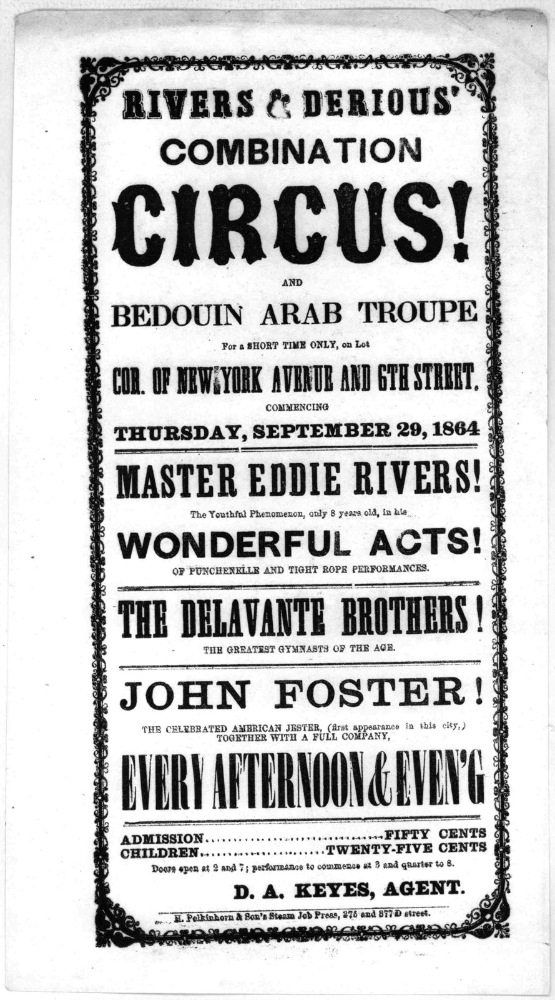

References / Poster / 530
Rivers & Derious’ Combination Circus handbill
A small Washington circus bill of 1864 in which every act gets its own line, face, and rule, inside a border of cast ornaments.
- Source
- Library of Congress, Printed Ephemera Collection: Rivers & Derious’ combination circus!
- Creator
- H. Polkinhorn & Son’s Steam Job Press, Washington (imprint)
- Made
- 1864
- Style
- Victorian typography (agent-proposed, not yet reviewed by a person)
- Moods
- Showy, loud, festive
- Evidence
- Inspected the Library of Congress scan (Printed Ephemera Collection, Portfolio 204, Folder 51b, copy scanned: 2; 1995 × 3589 px). LoC records six duplicate copies.
- Reviewed
- Rights
- Open license, stored. License: public domain. Rights policy
Context
LoC catalogues the bill as 1 p., 30 × 17 cm, Washington, 1864. LoC 2020776481.
The bill advertises the circus and a “Bedouin Arab Troupe” on the lot at New York Avenue and 6th Street from Thursday, 29 September 1864. The imprint reads “H. Polkinhorn & Son’s Steam Job Press, 375 and 377 D street.”
Observed
- A border of cast scroll ornaments with corner pieces frames the whole bill.
- “CIRCUS!” is the largest line, in a black Tuscan-style letter with forked serifs and swelling stems.
- Other lines use a shaded slab (“RIVERS & DERIOUS’”), a wide sans-serif (“COMBINATION”, “WONDERFUL ACTS!”), condensed slabs (“MASTER EDDIE RIVERS!”, “THE DELAVANTE BROTHERS!”), a wide Clarendon (“JOHN FOSTER!”), and a very condensed roman (“EVERY AFTERNOON & EVEN’G”).
- Full-width thick-and-thin rules divide the acts. Small capitals under each name describe the act.
- Admission prices use dotted leaders. Every line except the price rows is centred.
- Black ink on white paper, with some broken and over-inked letters.
Why it belongs
The bill shows the style at small scale: the hierarchy comes only from face, width, and size, and the ornament border gives the sheet a frame without any picture.
Each act behaves like a card: a big name, a small description, and a rule.
Borrow
Treat each item as a block of a big name, a small description line, and a rule.
Frame a whole page with a border of small repeated ornaments and corner pieces.
Measured
Machine-extracted by tools/image-traits.py on . Full measurement.
- Mean chroma
- 0
- Palette
- #ffffff 50%
- #efefef 10%
- #dedede 6%
- #121212 4%
- #c5c5c5 3%
- #d3d3d3 3%
- #676767 3%
- #7e7e7e 3%

